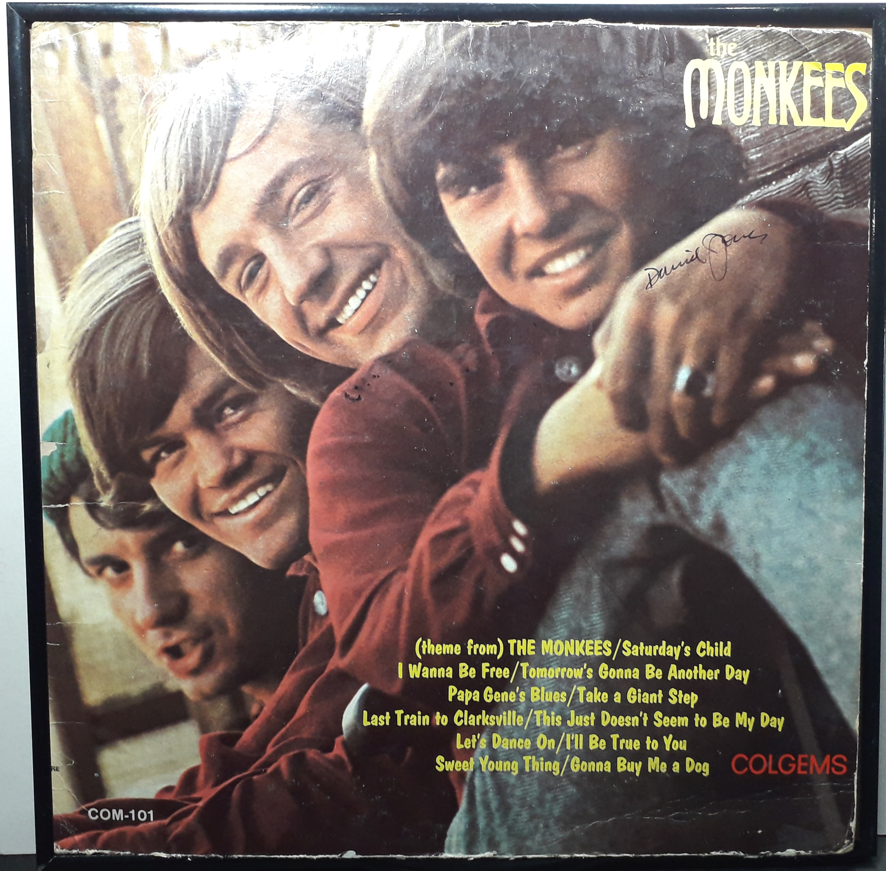

Miscellaneous
Album comes framed and ready to hang.
Product No. HEA-0325
$140
Shipping: $18.95
Description
Signed LP Album - Monkees Self Titled
Full Description
Deceased, Davy Jones (December 30, 1945 – February 29, 2012) was an English singer, actor, and entertainer best known as a member of the popular 1960s rock group The Monkees. Born David Thomas Jones in Manchester, England, he began his career as a child actor. He appeared on British television and later performed as the Artful Dodger in the stage musical Oliver! His work in the production brought him to the United States, where he appeared with the cast on The Ed Sullivan Show in 1964. In 1965, Jones was selected to become one of the four members of The Monkees, alongside Micky Dolenz, Michael Nesmith, and Peter Tork. The group was created for the television series The Monkees, which premiered in 1966 and quickly became a major success. Jones sang lead vocals on several well-known Monkees recordings, including “Daydream Believer,” “I Wanna Be Free,” and “Valleri.” His youthful appearance and British accent made him particularly popular with teenage audiences. After The Monkees originally disbanded, Jones continued recording music, acting, and performing as a solo entertainer. He frequently reunited with other members of The Monkees for tours and special appearances. Jones also became an accomplished horseman and maintained a lifelong interest in horse racing. He owned and trained horses and occasionally competed as an amateur jockey. Davy Jones died from a heart attack on February 29, 2012, at the age of 66. He remains closely associated with the music and television culture of the 1960s and is remembered as one of The Monkees' most recognizable members.
Condition
OK. Album cover shows normal age-related wear, including split seams.